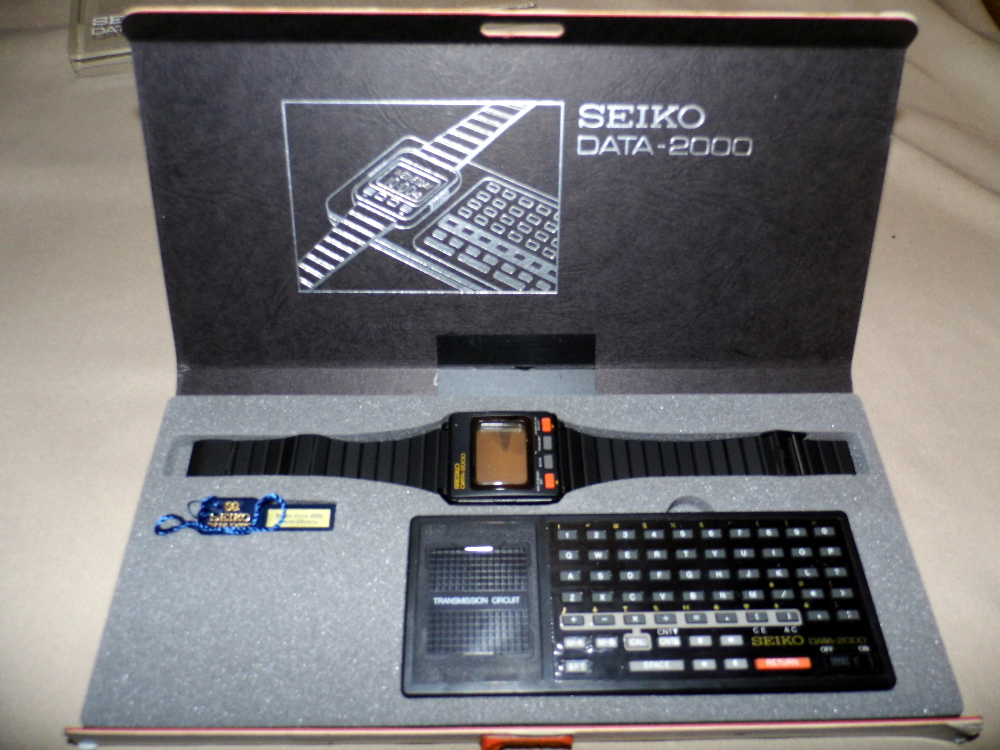

Seiko Data-2000
The first computer watch — data beamed to your wrist via electromagnetic control coupling from a wireless desktop keypad

Overview
The Seiko Data-2000, released in 1984, is widely credited as one of the first practical computer watches — a wrist-worn personal database that could store 2,000 characters of text and numbers. What makes it a genuine interaction-design landmark is not the watch itself but how data reached it. To load information, the wearer rested the watch onto a specialist desktop keypad base and typed; every 'tip-tap-typing' was transferred into the watch's memory through electromagnetic control coupling — a contactless, pin-free inductive link that worked with no cable, connector, or physical interface. The watch was then detached and the stored text recalled on a 4x10 character segmented LCD. This clean separation of authoring (a full-size desktop keypad) from consumption (the wrist) — bridged by a wireless dock — is an embodied precursor to every dock-and-sync smartwatch, decades before inductive charging, IR, Bluetooth, or NFC were mainstream. It was released in gold, silver, and black.
Deep dive
Seiko's watch-computer program began with the Datalog promo piece in the late 1970s and matured through the microprocessor era. The Data-2000's defining input device was a specialist keypad dock: typing on its keys wrote to the watch's memory through electromagnetic control coupling. This contactless, transformer-like link let a wrist-worn device inherit the ergonomics of a full desktop keyboard without compromising the watch's sealed, waterproof-watch form factor. It is a genuine wireless-sync artifact — no pins, no serial cable — achieved with induction at a time when connecting two computers meant pulling out a cable.
The Data-2000's memory was modest — roughly 2,000 characters of addressable text, with practical recalled capacity described as small (on the order of a few hundred digits of memos per screen). The 4x10 LCD was strictly read-only; there was no way to edit data on the watch. All authoring happened at the dock, and the wrist simply replayed the stored text. This asymmetric, honest division of labor — desktop authors, wrist consumes — is the same trade-off the museum's sibling Seiko RC-1000 (see its section) refined the same year by switching to a wired, computer-driven RS-232C serial dump.
The Data-2000 seeded Seiko's 1980s wrist-computer line that grew into the RC-1000/RC-4000 'PC Datagraph' and the RC-4500 'WristMac'. The WristMac was worn on Space Shuttle Atlantis (STS-43) in 1991 for the first email sent from space. While the Data-2000 itself sold in collector-niche numbers and its nonstandard data bank and limited storage kept it from the mass market, historians and collectors consistently cite it as the earliest practical 'computer watch,' putting it at the very beginning of the smartwatch timeline.
Team & pioneers
- Seiko (Hattori Seiko research). Developer and manufacturer of the Data-2000 and the wider 1980s wrist-computer line
Media
Sources
- History of the Smartwatch — Wikipedia (Data 2000: external keyboard, electromagnetic-coupling wireless docking, ~112 digits practical memory, released 1984)
- Seiko Data-2000, The First Computer Watch — Wikimedia Commons (image + description of keypad dock)
- Seiko Data-2000 — Joe Haupt (Flickr, 2013)
- Pocket Calculator Show: Seiko Computer Watch Fun — Data 2000 through WristMac family history